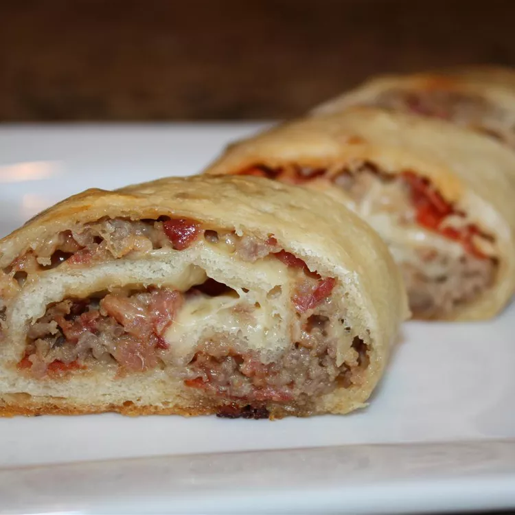

Calzone Stromboli

Ham and Cheese Stromboli
A pizza in half, much better than calzones. Had them all over in the Italian areas
in Philadelphia growing up. Serve with spaghetti sauce or Ranch dressing.
Ingredients
- 2 (16 ounce) packages refrigerated pizza crust dough
- 1 (28 ounce) jar spaghetti sauce
- ¼ pound cooked ham, sliced
- ¼ pound Capacola sausage, sliced
- ¼ pound salami, sliced
- ¼ pound pepperoni sausage, sliced
- garlic powder to taste
- ...
Steps
-
Preheat oven to 425 degrees F (220 degrees C). Let dough rise according to
package instructions, then punch down, and divide into 4 pieces.
-
On a floured surface, roll each piece of dough into a long oval shape. Spread
each with sauce, then layer with ham, capacola, salami, and pepperoni. Sprinkle
with garlic powder, then top with mozzarella, onion, mushrooms and bell
pepper. Bring the long sides together over the center, and pinch together to seal.
- ...